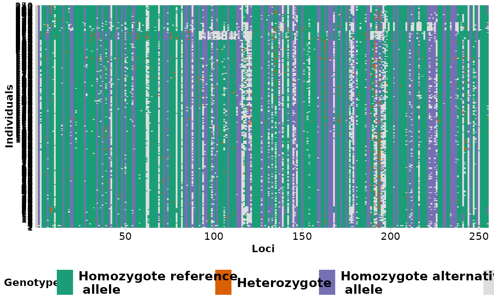

Each locus is color coded for scores of 0, 1, 2 and NA for SNP data and 0, 1 and NA for presence/absence (SilicoDArT) data. Individual labels can be added and individuals can be grouped by population.
Plot may become cluttered if ind_labels If there are too many individuals, it is best to use ind_labels_size = 0.
gl.smearplot(
x,
ind_labels = FALSE,
group_pop = FALSE,
ind_labels_size = 10,
plot_colors = NULL,
posi = "bottom",
save2tmp = FALSE,
verbose = NULL
)Arguments
- x
Name of the genlight object containing the SNP or presence/absence (SilicoDArT) data [required].
- ind_labels
If TRUE, individuals are labelled with indNames(x) [default FALSE].
- group_pop
If ind_labels is TRUE, group by population [default TRUE].
- ind_labels_size
Size of the individual labels [default 10].
- plot_colors
Vector with four color names for homozygotes for the reference allele, heterozygotes, homozygotes for the alternative allele and for missing values (NA), e.g. four_colours [default NULL]. Can be set to "hetonly", which defines colors to only show heterozygotes in the genlight object
- posi
Position of the legend: “left”, “top”, “right”, “bottom” or 'none' [default = 'bottom'].
- save2tmp
If TRUE, saves plot to the session temporary directory (tempdir) [default FALSE].
- verbose
Verbosity: 0, silent or fatal errors; 1, begin and end; 2, progress log; 3, progress and results summary; 5, full report [default NULL].
Value
Returns unaltered genlight object
See also
Other Exploration/visualisation functions:
gl.pcoa.plot(),
gl.select.colors(),
gl.select.shapes()
Examples
gl.smearplot(testset.gl,ind_labels=FALSE)
#> Processing genlight object with SNP data
#> Starting gl.smearplot
#>

#> Completed: gl.smearplot
#>
 gl.smearplot(testset.gs[1:10,],ind_labels=TRUE)
#> Processing genlight object with Presence/Absence (SilicoDArT) data
#> Starting gl.smearplot
#>
gl.smearplot(testset.gs[1:10,],ind_labels=TRUE)
#> Processing genlight object with Presence/Absence (SilicoDArT) data
#> Starting gl.smearplot
#>
 #> Completed: gl.smearplot
#>
#> Completed: gl.smearplot
#>